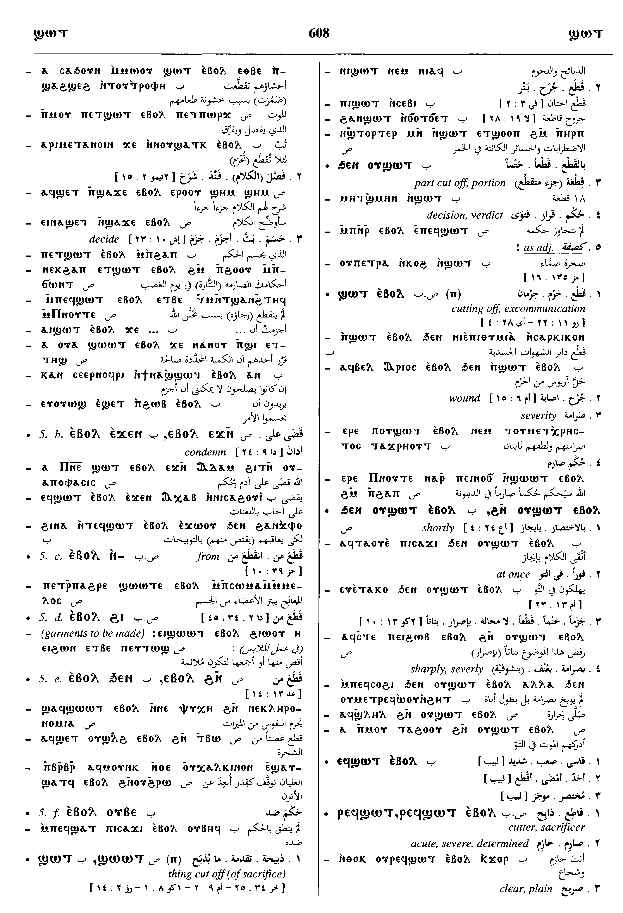
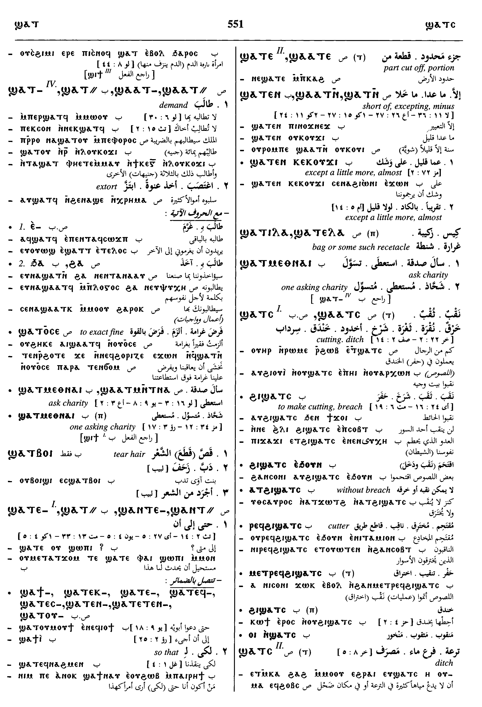
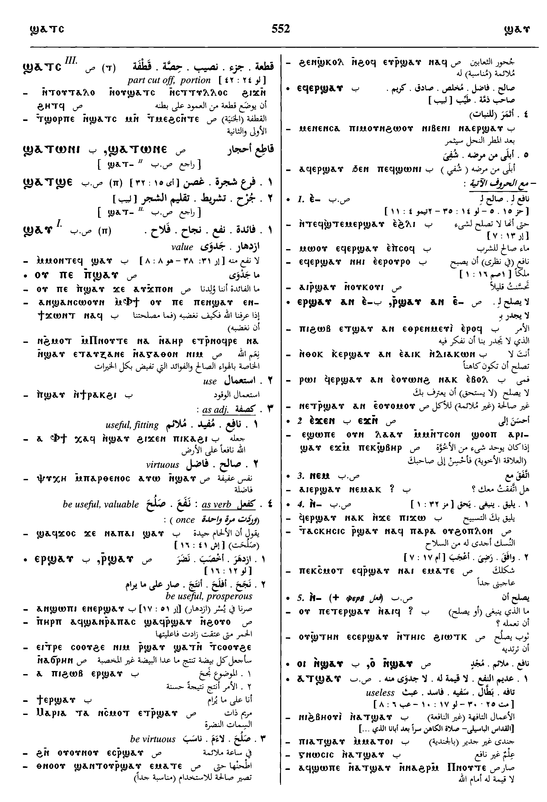

(verb)
cut, slay
― intr: [κοπτειν, θυειν, σφαζειν, τεμνειν]
― qual: [εγκοπος]
― tr: [κοπτειν]
― p.c. S,B,F, he who, that which cuts, is cut
intr: be cut short, want, lack [υστερειν, ελαττονειν]
― intr: [κοπτειν, θυειν, σφαζειν, τεμνειν]
― qual: [εγκοπος]
― tr: [κοπτειν]
― p.c. S,B,F, he who, that which cuts, is cut
intr: be cut short, want, lack [υστερειν, ελαττονειν]
1: cut, 2: slay, 3: be cut short, want, lack
complete++
| cut, slay3100 | 590b | ||||||||
| With following preposition:7428 | 591a | ||||||||
| c ⲉ- | for7429 | ||||||||
| c ⲉϫⲛ- | on7430 | ||||||||
| c ⲛ- (dat) | 7431 | ||||||||
| c ϩⲛ- S | with7432 | ||||||||
| With following adverb:7433 | 591b | ||||||||
| c ⲉⲃⲟⲗ | cut, cut off, decide, be severe
― intr: ― qual: ― tr: [αποκοπτειν]7434 |
||||||||
| c (ⲉⲃⲟⲗ) ⲉ- | for7435 | ||||||||
| c (ⲉⲃⲟⲗ) ⲉϫⲛ- | decide upon, condemn7436 | ||||||||
| c (ⲉⲃⲟⲗ) ⲛ- | from7437 | ||||||||
| c (ⲉⲃⲟⲗ) ⲟⲩⲃⲉ- B | against7438 | ||||||||
| c (ⲉⲃⲟⲗ) ϩⲓ- | from, from out7439 | ||||||||
| c (ⲉⲃⲟⲗ) ϩⲛ-, c (ⲉⲃⲟⲗ) ϧⲉⲛ- | as last7440 | ||||||||
| ― SABF | (noun masculine)thing cut, esp of sacrifice [θυμα, σφαγιον]
as adj [τμητος]3101 |
592a | |||||||
| ― ⲉⲃⲟⲗ SBF | (noun masculine)cutting out, off, excomunication [τομη, αποτομια]3102 | ||||||||
| ⲁⲧϣ. S | uncut3103 | ||||||||
| ⲙⲉⲧϣ. ⲉⲃⲟⲗ F | severity3104 | ||||||||
| ⲣⲉϥϣ. SABF | cutter3105 | ||||||||
| ϭⲓⲛϣ. ⲉⲃⲟⲗ, ϫⲓⲛϣ. ⲉⲃⲟⲗ SB | cutting off, slaying3106 | 592b | |||||||
| be cut short, want, lack3107 | |||||||||
| With following preposition or adverb:7441 | |||||||||
| c ⲉ- | lack for7442 | ||||||||
| c ⲛ- | as last7443 | ||||||||
| c ϩⲁ- S | because of7444 | 593a | |||||||
| c ϩⲛ-, c ϧⲉⲛ- | be lasking in, in need of7445 | ||||||||
| c ⲉⲃⲟⲗ S | as ϣ.7446 | ||||||||
| ― SAF | (noun masculine)need, shortage [υστερημα, ελλατωμα]3108 | ||||||||
| ⲁⲧϣ. S | without shortage3109 | ||||||||
| ϣⲁⲁⲧⲛ- S
ϣⲁⲧⲛ- SSfA ϣⲁⲧⲉ- SF ϣⲁⲧⲉⲛ- BF |
(preposition)short of, excepting, minus [πλην, χωρις]3110 | ||||||||
| ϣ. ⲕⲉⲕⲟⲩϫⲓ B | except a little more, almost3111 | 593b | |||||||
| ϣⲁⲁⲧⲉ, ϣⲁⲁⲧⲥ S | (noun feminine)part cut off, portion [μερος]3112 | ||||||||
| ϣⲁⲁⲧⲥ S
ϣⲁⲧⲥ SB |
(noun feminine)cutting, ditch [διωρυξ, διορυγη]3113 | ||||||||
| ϩⲓ ϣ. B | make cutting, breach3114 | ||||||||
| ⲣⲉϥϩⲓ ϣ. | cutter3115 | ||||||||
| ϣⲧⲁ S | (verb)intr: be faulty, have need, defect3116 | ||||||||
| ϣⲧⲁ SAL
ϣⲧⲟ (?) F |
(noun masculine)defect, fault [υστερημα]3117 | 594a | |||||||
| ⲣ ϣ. | come short3118 | ||||||||
| ⲁⲧϣⲧⲁ. NH [codex II - The Apocryphon of John; 106; 25; 14; ⲉⲣⲉⲡⲡⲗⲏⲣⲱⲙⲁ ⲧⲏⲣϥ ⲛⲁϣⲱⲡⲉ ⲉϥⲟⲩⲁⲁⲃ ⲁⲩⲱ ⲛⲁⲧϣⲧⲁ]
[codex IV - The Apocryphon of John; 118; 39; 14; ⲉⲣⲉⲡⲡⲗⲏⲣⲱⲙⲁ ⲧⲏⲣϥ ⲛⲁϣⲱⲡⲉ ⲉϥⲟⲩⲁⲁⲃ ⲁⲩⲱ ⲛⲁⲧϣⲧⲁ] [codex VII - The Paraphrase of Shem; 133; 3; 24; ϫⲉⲕⲁⲁⲥ ⲉϥⲛⲁϭⲱⲗⲡ ⲉⲃⲟⲗ ⲛϭⲓ ⲡϣⲱϣ ⲙⲡⲟⲩⲟⲉⲓⲛ ⲛⲁⲧϣⲧⲁ] [codex VII - The Paraphrase of Shem; 133; 39; 24; ⲁⲉⲓⲟⲩⲱⲛϩ ⲉⲃⲟⲗ ⲉⲓⲟ ⲛⲛⲁⲧϣⲧⲁ] |
without defect8860 | ||||||||
| ⲙⲛⲧⲁⲧϣⲧⲁ. NH [codex I - The Tripartite Tractate; 105; 129; 12; ⲟⲩⲙⲛⲧⲁⲧϣⲧⲁ] | perfection8861 | ||||||||
See also:
Homonyms:
| view | ϣⲟⲧϣⲧ, ϣⲟϫⲧ S ϣⲟⲧϣⲉⲧ B ϣⲉⲧϣⲱⲧ⸗ SB ϣⲉⲧϣⲱϭ⸗ F ϣⲉⲧϣⲱⲧ† SB | (verb) tr: cut, carve, hollow [γλυφειν, κατακοπτειν]
qual: [χαραγμα] intr: [εξορυσσειν]156 |
| view | ϭⲣⲱϩ SF ⲕⲣⲱϩ, ϭⲣⲱⲱϩ, ⲕⲣⲟϩ S ϭⲣⲟϩ, ϫⲟⲣϩ† B ϫⲁⲣϩ† F | (verb) intr: be in want, needy, disminished [υστερειν]
qual: tr: S2617 |
| view | ϭⲟϫϭ(ⲉ)ϫ S ϭⲁϫϭⲉϫ Sf ϭⲁϫϭ A ϭⲟⲧϭⲉⲧ, ϣⲟⲧϣⲉⲧ B ϭⲉⲧϭⲱⲧ- B ϭⲉϫϭⲱϫ⸗, ϭⲉⲧϭⲱϫ⸗, ϭⲉⲧϭⲱϭ⸗ S ϭⲉⲧϭⲱⲧ⸗ B ϭⲉϫϭⲟϫⲧ† S | (verb) tr: cut, smite, slaughter [κοπτειν, ρηγνυναι]3377 |
| view | ϩⲟⲗϩⲗ S ϩⲁⲗϩⲗ L ϧⲟⲗϧⲉⲗ, ϧⲉⲗϧⲱⲗ- B ϩⲉⲗϩⲱⲗ⸗ S ϧⲉⲗϧⲱⲗ⸗, ϧⲉⲗϧⲟⲗ⸗ B ϩⲗϩⲁⲗⲧ† L ϧⲉⲗϧⲱⲗ† B | (verb) intr: slay [σφαζειν, αποκεντειν]
tr: [σφαζειν]2179 |
| view | (ⲡⲱⲣⲥ), ⲡⲁⲣⲥ- A | (verb) tr: slaughter [κατασφαγειν]1285 |
| view | ⲕⲱⲛⲥ SAF ⲕⲱⲱⲛⲥ SL ⲭⲱⲛⲥ B ⲕⲉⲛⲥ-, ⲕⲟⲛⲥ⸗, ⲕⲟⲟⲛⲥ⸗ S ⲕⲁⲛⲥ⸗ AF ⲕⲁⲁⲛⲥ⸗ L ⲕⲟⲛⲥ† S | (verb) tr: pierce, slay [σφαζειν, εκκεντειν, κερατιζειν, τιτρωσκειν, θυειν]
intr: [κερατιζειν, σφαζειν]819 |
| view | ϩⲱⲧⲃ SL ϩⲱⲧⲉⲃ SF ⳉⲱⲧⲃⲉ A ϩⲱⲧⲃⲉ L ϧⲱⲧⲉⲃ B ϩⲉⲧⲃ- S ϩⲁⲧⲃ- L ϧⲉⲧⲉⲃ-, ϧⲁⲧⲉⲃ- {ⲣⲉϥ-} B ϩⲁⲧⲉⲃ- F ϩⲟⲧⲃ⸗ S ⳉⲁⲧⲃ⸗ A ϩⲁⲧⲃ⸗ LF ϧⲟⲑⲃ⸗ B ϩⲟⲧⲃ† S ϩⲁⲧⲃⲉ† L p c ϩⲁⲧⲃ- S p c ⳉⲁⲧⲃⲉ- A p c ϩⲁⲧⲃⲉ- L p c ϧⲁⲑⲉⲃ- B | (verb) intr: kill [αποκτεινειν, θανατουν]
tr: [αποκτεινειν, θανατουν, αναιρειν]2305 |
| view | ⲟⲩⲱ(ⲱ)ϫⲉ S ⲟⲩⲱϫ, ⲃⲱϫ B ⲟⲩⲉⲉϫⲉ- S ⲟⲩⲉϫ- SB ⲟⲩⲱϫⲉ- Sa ⲟⲩⲟ(ⲟ)ϫ⸗ S ⲟⲩⲁϫ⸗ SaSf ⲟⲩⲟϫ⸗ B | (verb) tr:
― cut [τεμνειν] ― cut off, out a woven garment1770 |
| view | ϭⲱⲱϫⲉ S ϭⲱϫⲉ SAL ϭⲱϫ S ϫⲱϫⲓ B ϫⲉϫ- SB ϫⲁϫ- B ϭⲟϫϩ⸗ S ϫⲟϫ⸗ B ϭⲟⲟϫⲉ† S ϭⲁⲁϫⲉ† SfF ϫⲏϫⲓ† B p c ϭⲁ(ⲁ)ϫⲉ- SF p c ϫⲁϫ- B | (verb) cut
― intr: [κοπτειν, λατομειν] ― tr: [διακοπτειν, εκκοπτειν]2653 |
| view | ϣⲱⲗϭ, ϣⲗϭ-, ϣⲁⲗⲕ⸗, ϣⲟⲗϭ† S ϣⲁⲗϭ† AL p c ϣⲁⲗϫ- S | (verb) tr: cut [τεμνειν]
qual: cutting, sharpened [ακοναν]1915 |
| view | ⲥⲱⲗⲡ SALF ⲥⲱⲗⲉⲡ B ⲥⲗⲡ-, ⲥⲉⲗⲡ- S ⲥⲁⲗⲉⲡ- L ⲥⲟⲗⲡ⸗ SB ⲥⲁⲗⲡ⸗ SfAF ⲥⲟⲗⲡ† SB p c ⲥⲁⲗⲡ- S | (verb) intr: break, burst [ρηγνυναι]
tr: S,A,L,B,F, break, cut off p.c.898 |
Homonyms:
| view | ϣⲱⲧ SB ⲉϣⲱⲧ SALBFO ⲉϣⲱⲱⲧ S feminine: (?) ⲉϣⲱⲧⲉ S plural: ⲉϣⲟⲧⲉ S plural: ⲉϣⲁⲧⲉ SL plural: ϣⲟϯ, ⲉϣⲟϯ B plural: ϣⲟⲧⲉ NH | (noun masculine) trader, merchant [εμπορος]1978 |


Dawoud: 607b - 609a, 609a - 609b, 594a - 594b, 551b, 551b, 551b, 552a




